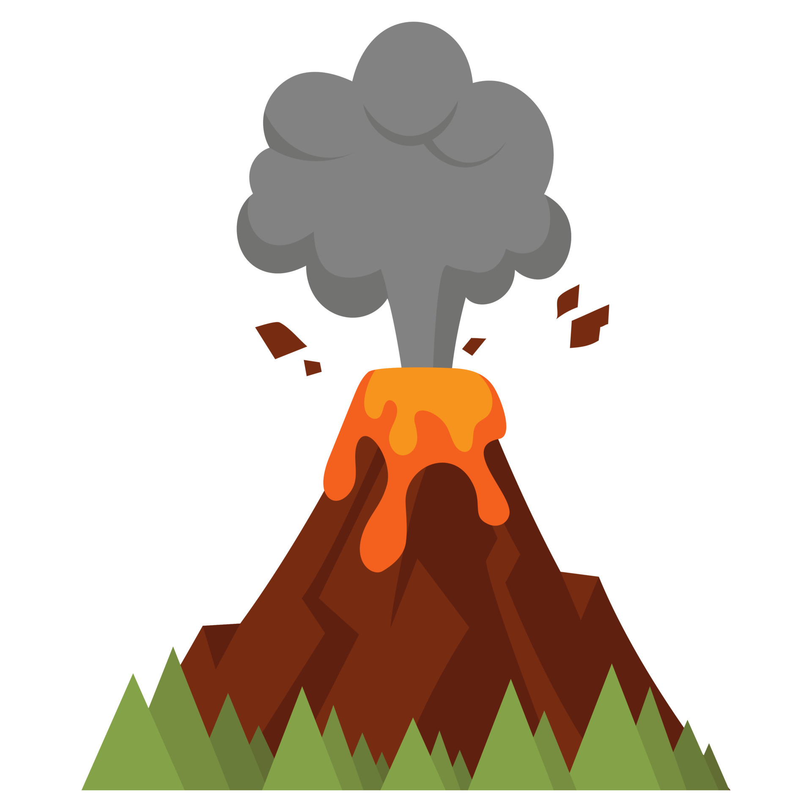
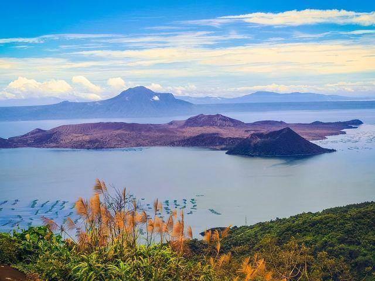

70,000

Introduction
Volcanic eruptions, as geological hazards, have the potential to cause significant damage and loss of life. Effective communication of complex volcanic information is vital for managing these natural events.
This study aims to provide comprehensive insights into visually conveying such information through an infographic, emphasizing the critical importance of preparedness, response, and recovery phases. Volcanic eruptions, being natural phenomena, have profound effects on society and the environment.
Acknowledgement
The following people have the researchers' sincere gratitude for everything they've done to make this research a success as well as those who have assisted them along the way. They want to start by giving thanks to God for being at their side the entire time. This fulfilment would not be possible without the knowledge and wisdom that was bestowed to them.
The researcher also like to acknowledge Mr. Jake Azarcon from Barangay Loma De Gato for giving time and information for research. This research will not be possible without the information that you have given to us.
The researchers praised themselves for giving this research their best effort. They also want to express their gratitude to their teachers, Ms. Jamica Abuda and Ms. Carmela Magpile, who assisted the researchers from the beginning of the study till the very finish. Their guidance and assistance inspired them to come up with excellent output.

Abstract
This study's main goals are to recommend a plan of action and provide more details concerning volcanic eruption. The researchers were able to offer a strategy for becoming ready for volcanic eruptions. This research’s main focus is finding strategies to prevent people from becoming helpless once this danger strikes.
According to this study, the community might be kept safe by knowing what to do before, during, and after the volcanic eruption. The researchers suggested that those who might become victims of a volcanic explosion might greatly benefit from paying attention to authorities and gathering necessary supplies.
Information
Action Plan
This Chapter Consists of 4 parts
Procedures Outline
The Procedures that will be used will be implemented with the help of this research is First: to conduct the research of what a Volcanic Eruption is about which ranges from how it occurs, theories, how it can affect communities, and lastly how to safeguard yourself and the people around you from it. Second: is to place all research into a research paper that consists of why it is being researched, and how the research can be implemented. Lastly: is to finally implement said research to communities that is inside the scope of what is researched.

Proposed Solution
The desired results in this research is to spread awareness about Volcanic Eruptions, the dangers it can bring to a community, and how to effectively safeguard citizens in this community.

Basis of the proposal
The proposition for this research is to study Volcanic Eruptions and how to keep people safe from it. The research is important for those who have little to no knowledge of the implications what volcanic eruptions can do and what dangers it can bring to a community, it will be conducted by looking for different sources in the internet on how to effectively safeguard a community when a volcanic eruption occurs, second is to interview local government officials in the target community such as Barangay Captains.

target implementation
The target is to prepare oneself to either seek refuge or to flee. Create an escape and shelter plan for your family and other members of your household. Verify that everyone is aware of the plans by going over them again. Get an emergency supplies kit together if you haven't already
Discussion of the topic
Volcanic eruptions are initiated by the movement of heat beneath the Earth's surface. These eruptions typically commence with the accumulation of gas-rich molten rock (magma) in reservoirs near the surface and may be preceded by the release of steam and gas from small ground vents. Moreover, minor earthquakes, often resulting from the interaction between dense, slow-moving magma and more permeable magma, can act as precursors to volcanic eruptions, especially those of an explosive nature.
Furthermore, volcanic eruptions can give rise to secondary events such as floods, landslides, and mudslides when coupled with precipitation. Additionally, they can incite wildfires through the emission of hot ashes. Beyond these immediate effects, volcanic eruptions also play a role in climate change by emitting gases such as sulfur dioxide, capable of inducing global cooling, and volcanic carbon dioxide, with the potential to contribute to global warming.
Review of Related Literature
Foreign
The Omega Theory
The following people have the researchers' sincere gratitude for everything they've done to make this research a success as well as those who have assisted them along the way. They want to start by giving thanks to God for being at their side the entire time. This fulfilment would not be possible without the knowledge and wisdom that was bestowed to them.
The researcher also like to acknowledge Mr. Jake Azarcon from Barangay Loma De Gato for giving time and information for research. This research will not be possible without the information that you have given to us.
The researchers praised themselves for giving this research their best effort. They also want to express their gratitude to their teachers, Ms. Jamica Abuda and Ms. Carmela Magpile, who assisted the researchers from the beginning of the study till the very finish. Their guidance and assistance inspired them to come up with excellent output.


Ofteness of Volcanic Eruptions
There are typically 40-50 continuing eruptions, and out of those generally around 20 will be actively erupting on any particular day. Overall, 50 volcanoes were in continuing eruption status as of 17 August 2023. An eruption marked as "continuing" does not always mean persistent daily activity but indicates at least intermittent eruptive events without a break of 3 months or more. As of August 2, 2023, the latest eruption listed in the list of the Global Volcanism Program is Poas, Costa Rica.
Local
Taal’s Beauty in Chaos
Batangas has a very active volcano, The Taal volcano. The Taal has its own uniqueness and beauty, It is a recommended place for tourists that visit Philippines. The best view where you’ll see the beauty of the Taal is in the Tagatay ridge. With more than 30 recorded eruptions, Taal Volcano is one of the Philippines' most active volcanoes. When Taal Volcano last erupted in early January 2020, more than 736,000 people were affected in CALABARZON (Region IV-A), Central Luzon (Region III), and the National Capital Region (NCR), and more than 500,000 people had to be evacuated.
Recently, The active volcano in Batangas erupted. The volcanic hazard around Batangas is high. Usually, the cause that volcanoes occurred is the pressurization by the subduction of the oceanic plate and terrestrial plate.


Pinatubong Tragedy
People knew Mount Pinatubo, It is known for one of the deadliest eruptions that happened in the Western Luzon, Philippines. The Mount Pinatubo ejected the ashes that El Chichón volcano (1982), which caused the Mount Pinatubo as the largest eruption in the 20th century, killing more than 72 people. In the part of Luzon, they lead the agricultural community that happens in the Philippines, they probide the need like rice, sugar, corn, etc.
When the Mount Pinatubo exploded, and this cause the disruption of the agriculture and caused a hundreds of people lose a job.
Results and Action Plan
One must be aware of what to do prior to, during, and after a volcanic eruption in order to ensure their own survival. Researchers advise people to gather the required resources, such as food and clothing for the upcoming days, and to make sure to retain all of their vital papers before the volcanic explosion. Additionally, work on communicating with everyone in the neighbourhood. Keep yourself safe and pay attention to the volcanic eruption alerts while the activity is taking place. If the authorities urge you to leave even though it appears safe to you to stay, heed their advice because they are aware of the potential damage a volcanic eruption might do.
Wearing protective clothing is another way to shield yourself from the falling ash, which can irritate or harm your skin. Additionally, carry a mask which protects your respiratory system because it will be risky for your breathing. After the volcanic eruption, pay attention to the authorities when they say whether it is safe to exit the evacuation center. Protect yourself from falling ash by wearing your mask at all times.
When the authorities declare it is safe to return home following volcanic activity, check your neighbourhood to see if there has been any damage, then ask for advice on whether it is safe to stay there. For up-to-date updates on the volcano, keep listening to the news. Ashfalls are heavy on roofs and may be the reason for a roof's collapse, therefore if it is safe to go outdoors, be careful to clean your roof while it still has ash on it.
Appedinces
PROVINCIAL DISASTER RISK REDUCTION AND MANAGEMENT OFFICE (PROVINCE OF BULACAN)Based on the Republic of the Philippines: Province of Bulacan, Provincial Disaster Risk Reduction and Management Office, its focus is to help the Local Government and its community to comprehend the hazards they face, specifically during volcanic eruption, to lessen the risks and for them to be prepared -- it is to make sure of the readiness and resilience of the communities.
| FUNCTIONS, DUTIES, AND RESPONSIBILITIES | Content |
|---|---|
| 1 | Design, program, and coordinate disaster risk reduction and management activities consistent the national Council's standards and guidelines; |
| 2 | Facilitate and support provincial risk assessments and emergency preparation. |
| 3 | Consolidate local disaster risk information which includes natural hazards, vulnerabilities, and climate change risks, and maintain a local risk map. |
| 4 | Organize and conduct training, orientation, and knowledge management activities on disaster risk reduction and management at the provincial level. |
| 5 | Operate a multi-hazard early warning system, linked to disaster risk reduction to provide accurate and timely advice to national or local emergency response organizations and to the general public, through diverse mass media, particularly radio, landline communications, and technologies for communication within rural communities. |
| 6 | Formulate and implement a comprehensive and integrated Provincial Disaster Risk Reduction in close coordination with the Provincial Development Council (PDC). |
| 7 | Identify, assess and manage the hazards vulnerabilities and risks that may occur in the Province of Bulacan. |
| 8 | Disseminate information and raise public awareness about those hazards, vulnerabilities and risks that may occur in the province. |
| 9 | Identify and implement cost-effective risk reduction measures/strategies. |
| 10 | Develop, strengthen and operationalize mechanism for partnership or networking with the private sector, CSO's and volunteer groups. |
| 11 | Respond to and manage the adverse effects of emergencies and carry out recovery activities in the affected area, ensuring that there is an efficient mechanism for immediate delivery of food, shelter and medical supplies for women and children, endeavour; and |
| 12 | Serve as the secretariat and executive arm of the PDRRMC. |
Summary of Raw Data
The researchers provided a survey for the barangay official of Loma de Gato, Marilao, Bulacan to answer some questions regarding on how volcanic eruption could affect their community and how would they handle it. Mr. Jake Azarcon, SK Kagawad of Brgy. Loma de Gato, answered the survey willingly.
What is the estimated population in your barangay?
What are the common problems that your community are facing when encountering a hazard?
Since Loma de Gato is one of the biggest barangays in terms of land area in Bulacan, sometimes is the distance of the rescue team HQ. Another is the traffic that causes delay of the response team.
Are all member of the community aware of Brgy. Evacuation plan?
Yes
What are the Geologic or Hydrometeo- ological
Hazard that are present in your community?
Fire and Flood
Which hazard is more often?
Fire
What are your plans if the effects of Volcanic Eruption occur in your barangay? Site examples.
First and foremost is the evaluation of the damage that will also give idea of what are the things needed to provide aside from KN-95 masks and relief goods (food and clothing).
Bibliography
Decker, R. W., Raikar, S. P., & Decker, B. B. (2023, October 12). Volcanic eruption | Description, history, mythology, & facts. Encyclopedia Britannica. https://www.britannica.com/science/volcanic-eruption
Earth, D. O., & McNutt, S. R. (2017). Volcanic eruptions and their repose, unrest, precursors, and timing. In National Academies Press eBooks. https://doi.org/10.17226/24650
Global Volcanism Program | Current eruptions. (n.d.). https://volcano.si.edu/gvp_currenteruptions.cfm
Hughes, M. K., Huang, Y., Dessai, S., & Cronin, S. J. (n.d.). Volcanic eruption - An overview. ScienceDirect, Topics. https://www.sciencedirect.com/topics/earth-and-planetary-sciences/volcanic-eruption
Nicolas, J. (2018, January 26). Volcanic eruptions and their impact on health. BusinessWorld Online. https://www.bworldonline.com/health/2018/01/26/115602/volcanic-eruptions-impact-health/
Think Hazard - Bulacan - Volcano. (n.d.). https://thinkhazard.org/en/report/24221-philippines-region-iii-central-luzon-bulacan/VA
Uncharted Philippines | Best of Batangas: Taal volcano, Taal heritage town and Anilao marine reserve. (n.d.). https://www.unchartedphilippines.com/en/adventures/best-of-batangas-taal-volcano-taal-heritage-town-and-anilao-marine-reserve/
Volcanic eruptions | IFRC. (n.d.). https://www.ifrc.org/our-work/disasters-climate-and-crises/what-disaster/volcanic-eruptions
Volcanoes | Ready.gov. (n.d.-b). https://www.ready.gov/volcanoes
Woo, G. (2021). Geophysical hazards. In Elsevier eBooks (pp. 815–825). https://doi.org/10.1016/b978-0-08-102908-4.00069-2
World Health Organization: WHO. (2019). Volcanic eruptions. www.who.int. https://www.who.int/health-topics/volcanic-eruptions#tab=tab_1
About Us
Robin ValenciaDriven to discover new experiences and learn more about myself, I am an academic achiever and active member of my school community. With a proven track record of success in pre-school, elementary, and junior high school, I am also involved in several extracurricular organizations and serve as a class officer. I am passionate about pursuing a life full of experiences and opportunities, and I am eager to see what the future holds.
Andre RamosHe is a 16-year-old member of the Tanglaw organization. He believes in the saying "motivation is to start where discipline is to finish." He lives with chivalry and righteousness as he faces everyday problems and hindrances.
Andre RamosHe is a 16-year-old member of the Tanglaw organization. He believes in the saying "motivation is to start where discipline is to finish." He lives with chivalry and righteousness as he faces everyday problems and hindrances.
Carlos Ethan S. AlviarHe is a carefree and easy-going person who is inspired to spread awareness.
Cashiel FloroShe is a carefree and easy-going person who is inspired to spread awareness.
Melody R. AbanteShe is an outgoing person who has been a consistent honor student from elementary to grade 10 and is a champion of a singing competition.